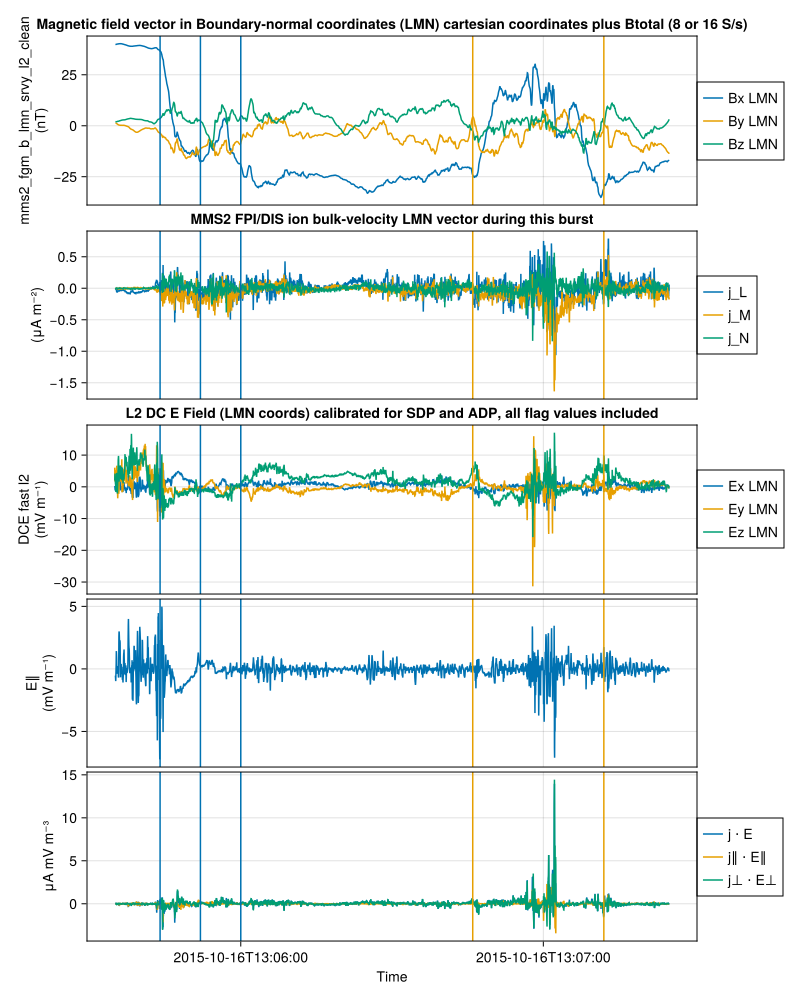
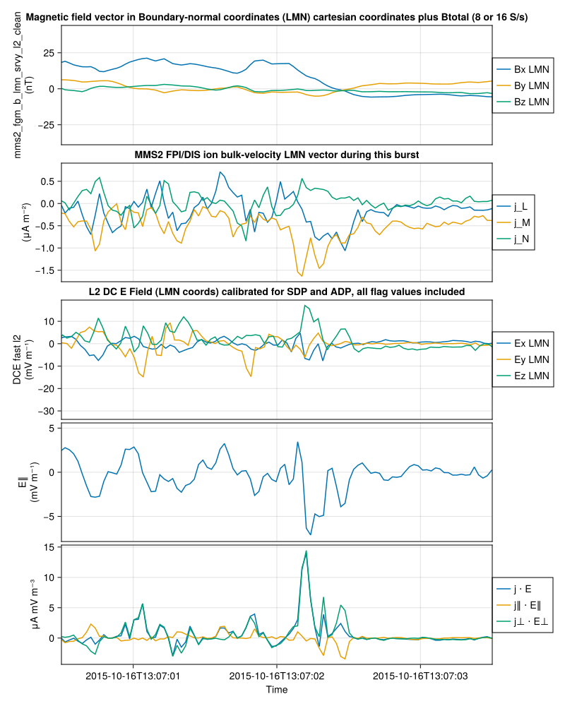

Code
using Speasy
using DimensionalData
using SPEDAS
using SPEDAS.MMS
using SPEDAS: dimarrayify
# using GLMakie
using Unitful
using CairoMakie
update_theme!(colormap=:rainbow1)
SPEDAS.DEFAULTS.add_title = true;Electron-scale measurements of magnetic reconnection in space
Obtain and analyze plasma data, including spectra, for the first MMS Science event (Burch et al., Science 2016, link here) showing magnetopause reconnection at the electron diffusion region on 2016/10/16 13:07:02.2 UT. Start by using Hwk06_mpause_RX.pro, provided. The objective of this exercise is to introduce plasma distributions from MMS (electrons and ions) and create burst spectra. In the process also create plasma moments and the plasma current and plot these along E and B. You are requested to create Figure 2 of Burch et al. plus the 3 bottom (electron) spectrograms from Figure 3 of the same paper (panels 3G, 3H and 3I). Your figure should look like the one shown on the next page, but using burst mode data in order to make it look like in Burch et al. You are requested to plot this figure at 2 time scales: the overview (2 min) timescale as in Fig. 2 of Burch et al. [‘13:05:30’,’13:07:30’] and the zoom-in (3 sec) timescale as in Fig. 3 of Burch et al. [‘13:07:00.5’,‘13:07:03.5’]. Notice that the clean and fast m’pause crossing was at 13:05:40UT, and this is used to determine N. In Fig. 2K of Burch et al. (the right-hand side of Fig. 2, the pictorial view of the MMS trajectory for the 2min interval) this initial m’pause crossing was near the start of the trajectory. The trajectory crosses the X-point at the 3 seconds of the zoom-in interval.
using Speasy
using DimensionalData
using SPEDAS
using SPEDAS.MMS
using SPEDAS: dimarrayify
# using GLMakie
using Unitful
using CairoMakie
update_theme!(colormap=:rainbow1)
SPEDAS.DEFAULTS.add_title = true;trange = ("2015-10-16T13:05:35", "2015-10-16T13:07:25")
tr_mpause = ("2015-10-16T13:05:40", "2015-10-16T13:06:09")
probe = 2
tvars = [
"cda/MMS2_FGM_SRVY_L2/mms2_fgm_b_gse_srvy_l2_clean",
"cda/MMS2_EDP_FAST_L2_DCE/mms2_edp_dce_gse_fast_l2",
]
B_gse, edp_dce_gse = get_data(tvars, trange) .|> DimArray
rotMat = mva_mat(tclip(B_gse[:, 1:3], tr_mpause))
B_LMN = rotate(B_gse[:, 1:3], rotMat) |> set_coord("LMN") |> set_coord("Boundary-normal coordinates"; old_coords=["Geocentric Solar Ecliptic"])
E_LMN = rotate(edp_dce_gse, rotMat) |> set_coord("LMN")
rotMatCan't get MMS2_FGM_SRVY_L2/mms2_fgm_b_gse_srvy_l2_clean without web service, switching to web serviceLinearAlgebra.Eigen{Float32, Quantity{Float32, 𝐌² 𝐈⁻² 𝐓⁻⁴, Unitful.FreeUnits{(nT²,), 𝐌² 𝐈⁻² 𝐓⁻⁴, nothing}}, Matrix{Float32}, Vector{Quantity{Float32, 𝐌² 𝐈⁻² 𝐓⁻⁴, Unitful.FreeUnits{(nT²,), 𝐌² 𝐈⁻² 𝐓⁻⁴, nothing}}}}
values:
3-element Vector{Quantity{Float32, 𝐌² 𝐈⁻² 𝐓⁻⁴, Unitful.FreeUnits{(nT²,), 𝐌² 𝐈⁻² 𝐓⁻⁴, nothing}}}:
501.50833f0 nT²
32.28409f0 nT²
13.2533245f0 nT²
vectors:
3×3 Matrix{Float32}:
0.368873 0.571604 0.73294
-0.122903 -0.75163 0.648034
0.921318 -0.329122 -0.207004The direction obtained from the Minimum Variance Analysis (MVA) in our study closely aligns with the direction reported in the literature.
The (x, y, z) GSE components of the L, M, and N axes are L = (0.3665, –0.1201, 0.9226) GSE, M = (0.5694, –0.7553, –0.3245) GSE, and N = (0.7358, 0.6443, –0.2084) GSE
data_rate = "brst"
fpi_des_ds = FPIDataSet(; probe, data_rate, data_type="des")
fpi_dis_ds = FPIDataSet(; probe, data_rate, data_type="dis")
des_data = get_data(NamedTuple, fpi_des_ds, trange) |> dimarrayify
dis_data = get_data(NamedTuple, fpi_dis_ds, trange) |> dimarrayify
des_n = modify_meta(des_data.numberdensity[:, 1], label="Ne")
dis_bulkv_lmn = rotate(dis_data.bulkv_gse, rotMat) |> set_coord("LMN")
des_bulkv_lmn = rotate(des_data.bulkv_gse, rotMat) |> set_coord("LMN")
dis_n = modify_meta(dis_data.numberdensity[:, 1], label="Ni")┌ 733-element DimArray{Unitful.Quantity{Float32, 𝐋⁻³, Unitful.FreeUnits{(cm⁻³,), 𝐋⁻³, nothing}}, 1} mms2_dis_numberdensity_brst ┐ ├──────────────────────────────────────────────────────────────────────── dims ┤ ↓ Ti Sampled{NanoDates.NanoDate} [2015-10-16T13:05:35.144103, …, 2015-10-16T13:07:24.945661] ForwardOrdered Irregular Points ├──────────────────────────────────────────────────────────────────── metadata ┤ Dict{Any, Any} with 17 entries: "SCALETYP" => "linear" "FILLVAL" => Any[-1.0e31] "DEPEND_0" => "Epoch" "FIELDNAM" => "MMS2 FPI/DIS number density" "SI_CONVERSION" => "1e6>m^-3" "VALIDMAX" => Any[100000.0] "axes" => VariableAxis[Speasy.VariableAxis(time, Units: ns, Shape:… :label => "Ni" "DELTA_MINUS_VAR" => "mms2_dis_numberdensity_err_brst" "FORMAT" => "E12.2" "VAR_TYPE" => "data" "CATDESC" => "MMS2 FPI/DIS ion number density during this burst" "LABLAXIS" => "N" "DELTA_PLUS_VAR" => "mms2_dis_numberdensity_err_brst" "DISPLAY_TYPE" => "time_series" "VALIDMIN" => Any[0.001] "UNITS" => "cm^-3" └──────────────────────────────────────────────────────────────────────────────┘ ⋮ ⋱
Vi_perp_mag, Ve_perp_mag = let Vi = dis_data.bulkv_gse, Ve = des_data.bulkv_gse, B = B_gse
Vi_clip = tclip(Vi, B)
Ve_clip = tclip(Ve, B)
B_int_Vi = tinterp(B, Vi_clip)[:, 1:3]
B_int_Ve = tinterp(B, Ve_clip)[:, 1:3]
Vi_perp_mag = toproj(Vi_clip, B_int_Vi) |> tnorm
Ve_perp_mag = toproj(Ve_clip, B_int_Ve) |> tnorm
modify_meta(Vi_perp_mag, ylabel="Viper_t"),
modify_meta(Ve_perp_mag, ylabel="Veper_t")
end(Quantity{Float32, 𝐋 𝐓⁻¹, Unitful.FreeUnits{(km, s⁻¹), 𝐋 𝐓⁻¹, nothing}}[16.370079f0 km s⁻¹, 39.085266f0 km s⁻¹, 18.779638f0 km s⁻¹, 36.385616f0 km s⁻¹, 28.834595f0 km s⁻¹, 31.232655f0 km s⁻¹, 21.860336f0 km s⁻¹, 25.042305f0 km s⁻¹, 19.904325f0 km s⁻¹, 3.4641075f0 km s⁻¹ … 54.85829f0 km s⁻¹, 52.70736f0 km s⁻¹, 43.587467f0 km s⁻¹, 37.50158f0 km s⁻¹, 32.17601f0 km s⁻¹, 29.35025f0 km s⁻¹, 22.573784f0 km s⁻¹, 23.164637f0 km s⁻¹, 26.775894f0 km s⁻¹, 33.856136f0 km s⁻¹], Quantity{Float32, 𝐋 𝐓⁻¹, Unitful.FreeUnits{(km, s⁻¹), 𝐋 𝐓⁻¹, nothing}}[179.42912f0 km s⁻¹, 65.0223f0 km s⁻¹, 95.883736f0 km s⁻¹, 80.23359f0 km s⁻¹, 31.386843f0 km s⁻¹, 176.10416f0 km s⁻¹, 21.706324f0 km s⁻¹, 53.19559f0 km s⁻¹, 126.49119f0 km s⁻¹, 102.77765f0 km s⁻¹ … 42.916084f0 km s⁻¹, 72.56186f0 km s⁻¹, 39.36531f0 km s⁻¹, 40.899796f0 km s⁻¹, 34.341866f0 km s⁻¹, 35.257183f0 km s⁻¹, 31.910067f0 km s⁻¹, 45.77481f0 km s⁻¹, 69.921875f0 km s⁻¹, 93.31721f0 km s⁻¹])J = begin
Vi = dis_bulkv_lmn
Ve = des_bulkv_lmn
n = dis_n
Ve_clip = tclip(Ve, Vi)
Vi_interp = tinterp(Vi, Ve_clip)
n_interp = tinterp(n, Ve_clip)
J = mapslices(Vi_interp - Ve_clip; dims=Ti) do V_diff_i
@. Unitful.q * V_diff_i * n_interp |> u"μA*m^-2"
end
modify_meta(J, labels=["j_L", "j_M", "j_N"])
end┌ 3661×3 DimArray{Unitful.Quantity{Float64, 𝐈 𝐋⁻², Unitful.FreeUnits{(μA, m⁻²), 𝐈 𝐋⁻², nothing}}, 2} ┐ ├──────────────────────────────────────────────────────────────────────── dims ┤ ↓ Ti Sampled{NanoDates.NanoDate} [2015-10-16T13:05:35.144103, …, 2015-10-16T13:07:24.945661] ForwardOrdered Irregular Points, → AnonDim Sampled{Int64} [1, 2, 3] ForwardOrdered Irregular Points ├──────────────────────────────────────────────────────────────────── metadata ┤ Dict{Any, Any} with 20 entries: "UNITS" => "km/s" "SCALETYP" => "linear" "FILLVAL" => Any[-1.0e31] "DEPEND_0" => "Epoch" "FIELDNAM" => "MMS2 FPI/DIS LMN bulk v" "SI_CONVERSION" => "1.0e3>m s^-1" "VALIDMAX" => Any[110000.0] "LABL_PTR_1" => ["Vx_LMN", "Vy_LMN", "Vz_LMN"] "TENSOR_ORDER" => Any[1] "axes" => VariableAxis[Speasy.VariableAxis(time, Units: ns, Shap… "COORDINATE_SYSTEM" => "LMN" "DELTA_MINUS_VAR" => "mms2_dis_bulkv_err_brst" "FORMAT" => "E12.2" "VAR_TYPE" => "data" "CATDESC" => "MMS2 FPI/DIS ion bulk-velocity LMN vector during this… :labels => ["j_L", "j_M", "j_N"] "DELTA_PLUS_VAR" => "mms2_dis_bulkv_err_brst" "DISPLAY_TYPE" => "time_series" "VALIDMIN" => Any[-110000.0] "REPRESENTATION_1" => "mms2_dis_cartrep_brst" └──────────────────────────────────────────────────────────────────────────────┘ ⋮ ⋱
des_energyspectr_tvars = [
"cda/MMS2_FPI_BRST_L2_DES-MOMS/mms$(probe)_des_energyspectr_par_$(data_rate)",
"cda/MMS2_FPI_BRST_L2_DES-MOMS/mms$(probe)_des_energyspectr_perp_$(data_rate)",
"cda/MMS2_FPI_BRST_L2_DES-MOMS/mms$(probe)_des_energyspectr_anti_$(data_rate)"
]
des_energyspectr = get_data(des_energyspectr_tvars, trange) .|> DimArray
des_energyspectr = replace.(des_energyspectr, 0 => NaN)
des_energyspectr_ratio = des_energyspectr[1] ./ des_energyspectr[2]
des_energyspectr = modify_meta.(des_energyspectr, colorrange=(1e5, 1e9))
des_energyspectr_ratio = modify_meta(des_energyspectr_ratio,
colorrange=(1e-1, 1e1), title="Ratio (Para/Perp)"
)[ Info: Cannot parse unit [ Info: Cannot parse unit [ Info: Cannot parse unit
┌ 3666×32 DimArray{Float64, 2} ┐ ├──────────────────────────────┴───────────────────────────────────────── dims ┐ ↓ Ti Sampled{NanoDates.NanoDate} [2015-10-16T13:05:35.024103, …, 2015-10-16T13:07:24.975661] ForwardOrdered Irregular Points, → Y Sampled{Int64} 1:32 ForwardOrdered Regular Points ├──────────────────────────────────────────────────────────────────── metadata ┤ Dict{Any, Any} with 19 entries: "VAR_NOTES" => "Counts, summed within 30 degrees parallel bentPipe magneti… "SCALETYP" => "log" "FILLVAL" => Any[-1.0e31] "DEPEND_0" => "Epoch" "FIELDNAM" => "MMS2 FPI/DES energySpectr_par" "VALIDMAX" => Any[1.0e30] "axes" => VariableAxis[Speasy.VariableAxis(time, Units: ns, Shape: (3… :colorrange => (0.1, 10.0) "DEPEND_1" => "mms2_des_energy_brst" :yscale => "log" "FORMAT" => "E12.2" :ylabel => "energy" "VAR_TYPE" => "data" "CATDESC" => "MMS2 FPI/DES electron energy parallel spectrum 30 degrees … "LABLAXIS" => "FPI1/DES EnSpectr, Parallel" :title => "Ratio (Para/Perp)" "DISPLAY_TYPE" => "spectrogram" "VALIDMIN" => Any[-1.0e30] :yunit => "eV" └──────────────────────────────────────────────────────────────────────────────┘ ⋮ ⋱
In 1 paragraph (10 lines) explain what each panel represents for this reconnection interval.
From top to bottom, the panels represent the following: 1. the magnetic field vectors in LMN coordinate system; 2. energy times spectrogram of ion energy flux; 3. energy times spectrogram of electron energy flux; 4. plasma density (ion and electron); 5. ion flow velocity vectors in LMN coordinate system; 6. magnitudes of electron and ion convection velocities; 7. current density; 8. electron parallel and perpendicular temperatures; 9. electric field vectors in LMN coordinate system; 10-12. electron spectrograms (parallel, perpendicular, anti-parallel); 13. electron spectrogram ratio (para/perp).
tvars2plot = [
B_LMN,
[dis_n, des_n],
dis_data.energyspectr_omni,
des_data.energyspectr_omni,
dis_bulkv_lmn,
[Vi_perp_mag, Ve_perp_mag],
E_LMN,
des_energyspectr...,
des_energyspectr_ratio
]
faxes = tplot(tvars2plot)
tlines!(faxes, "2015-10-16T13:05:52")
tlines!(faxes, ["2015-10-16T13:05:44", "2015-10-16T13:06:00"])
tlines!(faxes, ["2015-10-16T13:06:46", "2015-10-16T13:07:12"])
ylims!.(faxes.axes[end-3:end], 1e1, 1e3)
faxes
Explain in 1 paragraph what the perpendicular electrons show.
Zoom in on the electron spectrograms
tBurchFig4 = ("2015-10-16T13:07:00.5", "2015-10-16T13:07:03.5")
tlims!(tBurchFig4)
The electron flow speed perpendicular to the magnetic field significantly exceeds the ion flow speed in the vicinity of the X-line, leading to a much stronger current near the X-line compared to the exhaust region. In contrast, the current closely follows the perpendicular ion speed within the magnetosheath and exhaust regions.
Furthermore, as illustrated in the figure below, reconnection dissipation is driven by the intense negative \(J_M\) current and negative \(E_M\) electric field, both perpendicular to the magnetic field \(B\) in the dissipation region. This condition preferentially accelerates electrons in the perpendicular direction, thereby reducing the ratio of electron parallel-to-perpendicular temperature. This effect is clearly demonstrated in the bottom panel of the figure above (compared to the magnetosheath and exhaust regions)
B_interp = tinterp(B_LMN, J)
E_LMN_interp = tinterp(E_LMN, J)
J_dot_E = tdot(J, E_LMN_interp) |> modify_meta(label="j ⋅ E")
E_parp = tsproj(E_LMN_interp, B_interp) |> modify_meta(label="E∥")
J_parp = tsproj(J, B_interp)
J_dot_E_para = tdot(J_parp, E_parp) |> modify_meta(label="j∥ ⋅ E∥")
J_dot_E_perp = tdot(toproj(J, B_interp), toproj(E_LMN_interp, B_interp)) |> modify_meta(label="j⊥ ⋅ E⊥")┌ 3661-element DimArray{Unitful.Quantity{Float64, 𝐌 𝐋⁻¹ 𝐓⁻³, Unitful.FreeUnits{(μA, m⁻³, mV), 𝐌 𝐋⁻¹ 𝐓⁻³, nothing}}, 1} ┐ ├──────────────────────────────────────────────────────────────────────── dims ┤ ↓ Ti Sampled{NanoDates.NanoDate} [2015-10-16T13:05:35.144103, …, 2015-10-16T13:07:24.945661] ForwardOrdered Irregular Points ├──────────────────────────────────────────────────────────────────── metadata ┤ Dict{Any, Any} with 1 entry: :label => "j⊥ ⋅ E⊥" └──────────────────────────────────────────────────────────────────────────────┘ 2015-10-16T13:05:35.144103 -0.0151287 μA mV m⁻³ 2015-10-16T13:05:35.174103 -0.00870461 μA mV m⁻³ 2015-10-16T13:05:35.204103 0.0100068 μA mV m⁻³ 2015-10-16T13:05:35.234103 -0.0133396 μA mV m⁻³ ⋮ 2015-10-16T13:07:24.885661 0.00910274 μA mV m⁻³ 2015-10-16T13:07:24.915661 0.0203747 μA mV m⁻³ 2015-10-16T13:07:24.945661 0.0440117 μA mV m⁻³
J · E is the total energy transfer (energy conversion) rate, which is a key quantity in reconnection studies. Since reconnection is known to be a dissipative process that converts magnetic energy to heat and particle kinetic energy, the dissipation quantity could help identify a physically relevant, small-scale region surrounding the reconnection.
tvars2plot = [
B_interp,
J,
E_LMN,
E_parp,
[J_dot_E, J_dot_E_para, J_dot_E_perp],
]
faxes = tplot(tvars2plot)
tlines!(faxes, "2015-10-16T13:05:52")
tlines!(faxes, ["2015-10-16T13:05:44", "2015-10-16T13:06:00"])
tlines!(faxes, ["2015-10-16T13:06:46", "2015-10-16T13:07:12"])
faxes
Zoom-in on the dissipation region
tlims!(tBurchFig4)